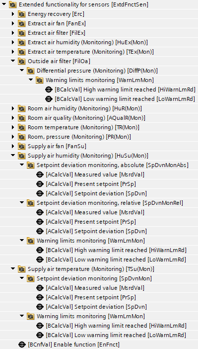
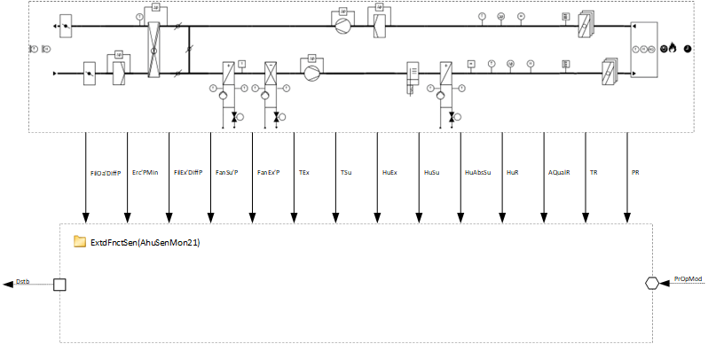
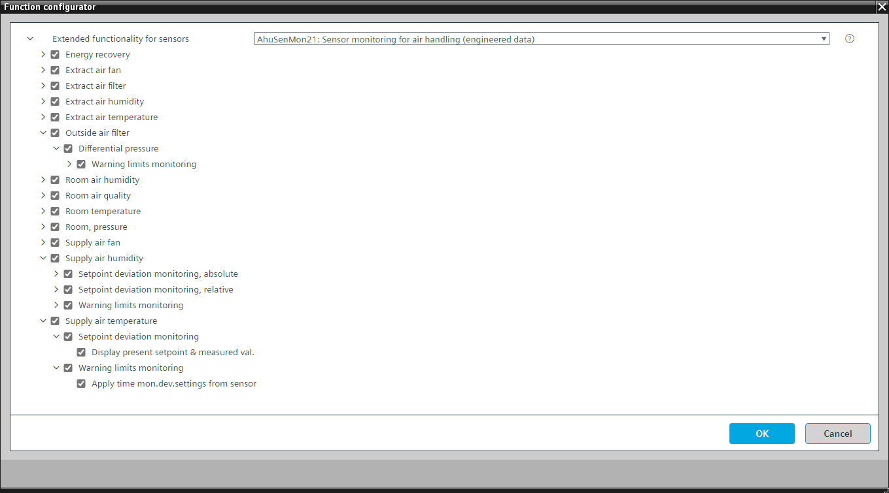

[AhuSenMon21] Sensor monitoring for air handling
Program block, name / node subtype: [AhuSenMon21] Sensor monitoring for air handling
Library hierarchy: Ventilation and air conditioning functions
Family: AhuSenMon
Project tree | Diagram |
|---|---|
 |  |
Configurator


Program blocks are stored in the library without I/Os. Use the auto-create and auto-connect functions to create I/Os and/or to connect them to the interface blocks, e.g., R_A, CMD_B. Alternatively, take the I/Os from the folder containing the predefined I/Os in the library and/or from the plant and connect them to the interface blocks.
Mandatory elements
Name | Description | Type | Alarm / Notification class | Trend / Type | |
|---|---|---|---|---|---|
EnFnct | Enable function | BCnfVal: Binary configuration value | N/A | No | |
Monitored elements
All elements in the table are optional and can have a warning limits monitor and/or a setpoint deviation monitor.
Name | Description | Warning limits | Setpoint deviation |
|---|---|---|---|
Erc'PMin(Mon) | Energy recovery'Minimum pressure (Monitoring) | Yes | No |
FanEx'P(Mon) | Extract air fan'Pressure (Monitoring) | Yes | Yes |
FilEx'DiffP(Mon) | Extract air filter'Differential pressure (Monitoring) | Yes | No |
HuEx(Mon) | Extract air humidity (Monitoring) | Yes | Yes |
TEx(Mon) | Extract air temperature (Monitoring) | Yes | Yes |
FilOa'DiffP(Mon) | Outside air filter'Differential pressure (Monitoring) | Yes | No |
HuR(Mon) | Room air humidity (Monitoring) | Yes | Yes |
AQualR(Mon) | Room air quality (Monitoring) | Yes | Yes |
TR(Mon) | Room temperature (Monitoring) | Yes | Yes |
RP(Mon) | Room, Pressure (Monitoring) | Yes | Yes |
FanSu'P(Mon) | Supply air fan'Pressure (Monitoring) | Yes | Yes |
HuSu(Mon) | Supply air humidity (Monitoring) | Yes | Yes |
TSu(Mon) | Supply air temperature (Monitoring) | Yes | Yes |